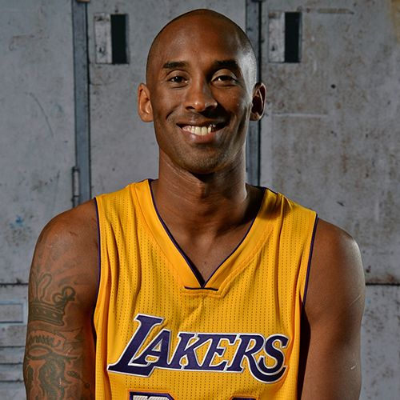
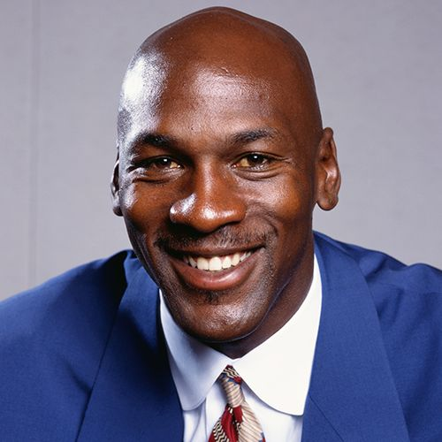

Bootstrap Tables
Try the different boostrap table style.
| Rank | Athlete | Short Description about the Athlete | Start of carrer |
|---|---|---|---|
| 1 |  Kobe Bryant | Father, husband, and former Basketball player | There was no specific date but in 1998, at the age of 19, he became the youngest All-Star in NBA history. |
| 2 |  Lebron James Lebron James |
Father, husband, and basketball player | There was no specific date but when he was 20 years old, he became the first member of the Cavaliers to win the NBA Rookie of the Year Award, making him the youngest player in NBA history. |
| 3 |  Michael Jordan | Father, husband, former baseball player, former basketball player, businessman, and actor | In 1984, he was drafted by the Chicago Bulls and soon received the NBA Rookie of the Year Award. |
| 4 | Manny Pacquiao | Father, husband, former boxer, former politician, entertainer, and singer. | In January 1995, at the age of 16, he competed against Edmund Ignacio and won the fight in four rounds, making him unstoppable. |
| 5 | Jordan Clarkson | Basketball player | He started his career at the age of 24 after joining Los Angeles Lakers. |